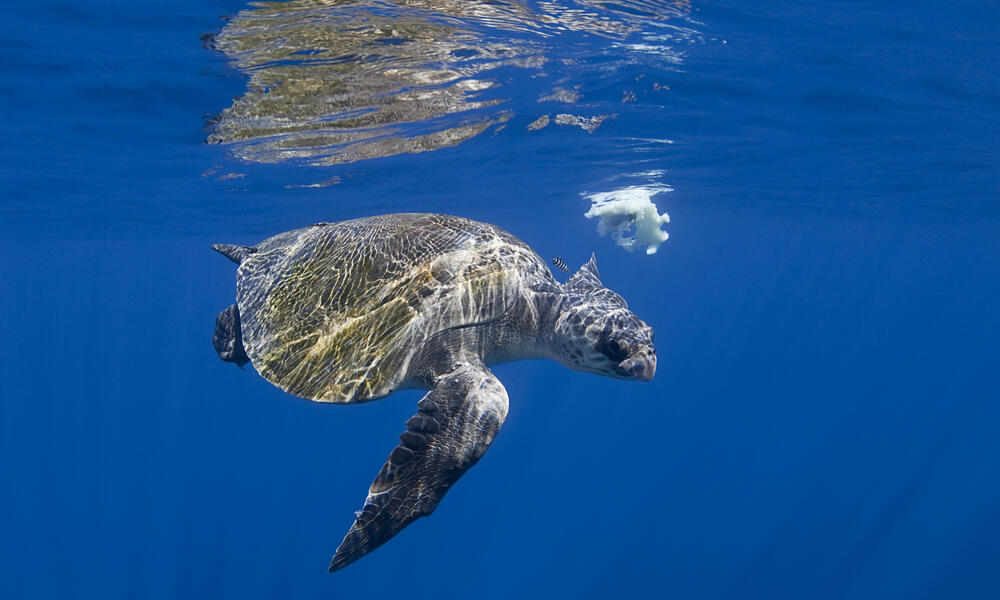
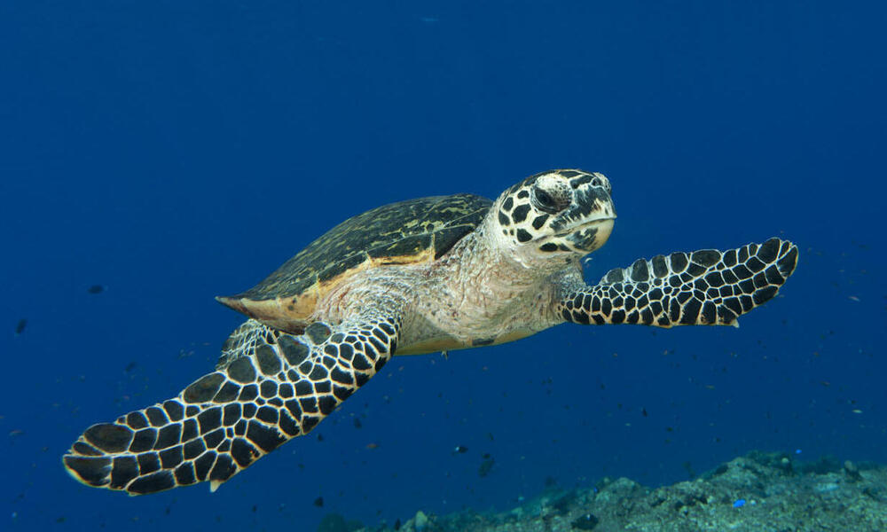
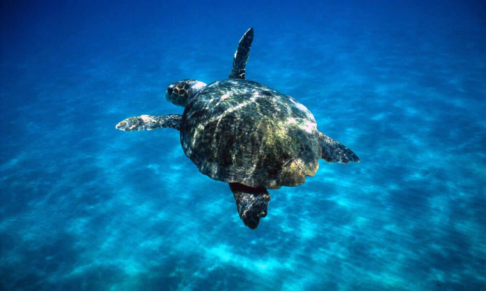
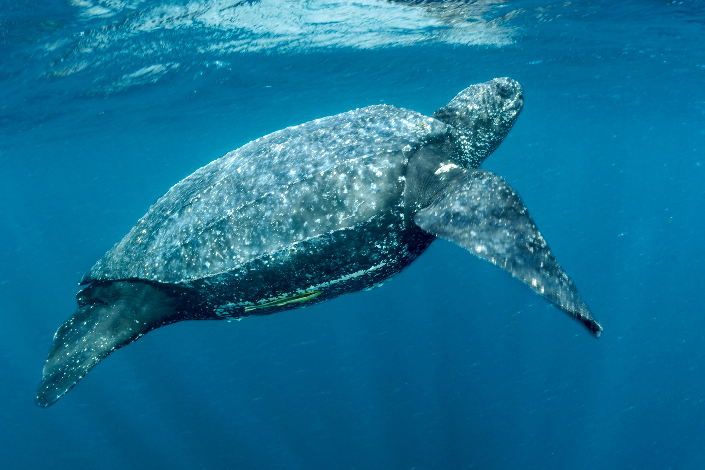

TURTLE
CATEGORIES

GREEN TURTLE
The Green Turtle, scientifically known as Chelonia mydas, is a captivating presence on the coast of Sri Lanka, fascinating observers with its impressive size and calm demeanor. With its distinct olive-brown shell, this species stands out among other sea turtles. As the largest hard-shelled turtle, Green Turtles can reach up to 5 feet (1.5 meters) in length and weigh around 400 pounds (180 kilograms). Green Turtles are herbivores, feeding on seagrasses and algae, playing a crucial role in maintaining the health of marine ecosystems. Despite their importance, they face threats such as habitat loss, pollution, fishing gear entanglement, and illegal hunting. Conservation efforts are underway to protect the Green Turtle, an endangered species, ensuring their survival and the preservation of oceanic balance.

OLIVE RIDLEY TURTLE
Dancing gracefully through the azure waters of Sri Lanka, the Olive Ridley Turtles bring an enchanting charm to the coastal landscapes. With their distinctive heart-shaped shell and shimmering olive-green hues, these turtles captivate the imagination. Measuring around 2 to 2.5 feet (60 to 75 centimeters) in length, Olive Ridley Turtles are known for their synchronized nesting rituals, where thousands of females gather on the sandy beaches to lay their eggs.As the smallest of the sea turtle species in Sri Lanka, Olive Ridleys play a vital role in maintaining the balance of marine ecosystems. With an average clutch size of 100-150 eggs, their nesting sites become a bustling hub of life, providing an awe-inspiring spectacle for onlookers. However, these remarkable creatures face numerous challenges, including habitat degradation, pollution, and accidental capture in fishing gear. By raising awareness and supporting conservation efforts, we can ensure the survival of Olive Ridley Turtles and preserve their magical presence for generations to come.

HAWKSBILL TURTLE
The Hawksbill Turtle, a true gem of the ocean, captures our hearts with its striking appearance and unique beak-like mouth. With a mesmerizing shell adorned in intricate patterns of amber and brown, these graceful creatures measure around 2.5 to 3 feet (75 to 90 centimeters) in length. As avid visitors of coral reefs, Hawksbill Turtles play a vital role in maintaining the health and balance of these delicate ecosystems. They specialize in dining on sponges, controlling their populations and allowing other reef organisms to thrive. Sadly, Hawksbill Turtles face numerous challenges, including habitat destruction, climate change, illegal wildlife trade, and pollution. Their stunning shells have made them targets for the production of tortoiseshell products, further endangering their population. By taking action and supporting conservation initiatives, we can ensure a brighter future for Hawksbill Turtles and protect these extraordinary creatures for generations to come. Let's join forces to safeguard their habitats and preserve the beauty of our oceans for all.

LOGGERHEAD TURTLE
Roaming the turquoise waters of Sri Lanka, the Loggerhead Turtles grace the shores with their awe-inspiring presence. With their massive heads and strong jaws, these magnificent creatures exhibit a sense of power and resilience. Measuring around 2.5 to 3.5 feet (75 to 100 centimeters) in length, Loggerhead Turtles embark on epic journeys, traversing vast distances to nest on the sandy beaches of Sri Lanka.Loggerhead Turtles are known for their impressive nesting habits, with females returning to the same beaches where they were born to lay their eggs. With an average clutch size of around 100-125 eggs, these nesting sites become a vital sanctuary for new life. However, Loggerhead Turtles face significant threats, including habitat destruction, pollution, and entanglement in fishing gear. By supporting conservation initiatives and promoting responsible practices, we can safeguard the future of Loggerhead Turtles and ensure their continued presence in Sri Lanka's marine habitats.

LEATHERBACK TURTLE
Embarking on a remarkable journey across the oceans, the Leatherback Turtles make a grand appearance along the pristine shores of Sri Lanka. These gentle giants showcase an extraordinary feature that sets them apart from other sea turtles—their impressive size. As the largest of all sea turtles, Leatherbacks can reach astonishing lengths of up to 6.5 feet (2 meters) and weigh over 1,000 pounds (450 kilograms). Their magnificent leathery carapace, adorned with ridges, is a testament to their strength and resilience. Leatherback Turtles are renowned for their incredible ability to dive to remarkable depths in search of their favorite prey—jellyfish. Their diet consists mainly of these gelatinous creatures, which they locate using their powerful vision and specialized adaptations. With their significant contributions to maintaining jellyfish populations, Leatherbacks play a vital role in the balance of marine ecosystems.Sadly, Leatherback Turtles face numerous threats that jeopardize their survival, including habitat degradation, climate change, entanglement in fishing gear, and ingestion of marine debris. By raising awareness, promoting sustainable practices, and supporting conservation efforts, we can ensure a brighter future for these majestic creatures and protect their critical nesting grounds in Sri Lanka and beyond.
| Turtle | Location | Cons. Status | Length / Weight | Life Span | Nesting Season | Clutch Sizes |
|---|---|---|---|---|---|---|
| Green Turtle | Hikkaduwa, Kosgoda, Bentota & Rekawa | Endangered | 1.2 - 1.5m / 160 - 190kg | 80 - 100 years | October to February | 100 - 200 eggs |
| Olive Ridley Turtle | Kosgoda, Bentota, Rekawa, & Pigeon Island | Vulnerable | 0.6 - 0.7m / 30 - 50kg | 50 - 60 years | March to July | 100 - 120 eggs |
| Hawksbill Turtle | Hikkaduwa, Kosgoda, & Pigeon Island | Critically Endangered | 0.8 - 1m / 60 - 80kg | 30 - 50 years | December to April | 100 - 150 eggs |
| Loggerhead Turtle | Kosgoda & Pigeon Island | Vulnerable | 0.9 - 1.1m / 115 - 150kg | 50 - 70 years | March to July | 100 - 120 eggs |
| Leatherback Turtle | Kosgoda, Bentota & Pigeon Island | Vulnerable | 1.5 - 2.2m / 300 - 600kg | 30 - 50 years | November to April | 80 - 100 eggs |
| All stats are based on worldwide averages | ||||||